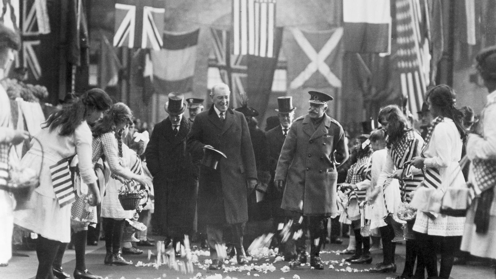

cronologia
En general se considera que la guerra comenzó en Europa el 1 de
septiembre de 193945 con la invasión alemana de Polonia, que
provocó la declaración de guerra de Reino Unido y Francia a Alemania
dos días después. Las fechas de inicio de las hostilidades en la
zona del océano Pacífico son varias y anteriores en el tiempo: la
segunda guerra chino-japonesa que comenzó el 7 de julio de 193767
o incluso la invasión japonesa de Manchuria a partir del 19 de
septiembre de 1931.
Otros coinciden con el historiador británico A. J. P. Taylor, que
sostenía que la guerra chino-japonesa y la guerra en Europa y sus
colonias ocurrieron simultáneamente y ambas se desataron en 1941.
Otra fecha de inicio a veces usada para la Segunda Guerra Mundial es
la invasión italiana de Etiopía desde el 3 de octubre de 1935.10 El
también historiador Antony Beevor opina que la conflagración comenzó
con la batalla de Jaljin Gol entre Japón y las fuerzas de Mongolia y
la URSS, de mayo a septiembre de 1939.11 En este artículo se
seguirá la datación convencional.
La fecha exacta del fin de la guerra tampoco tiene un consenso
universal. Generalmente se ha aceptado que el conflicto terminó con
el armisticio japonés del 14 de agosto de 1945, en lugar de la
rendición formal de Japón, que se produjo el 2 de septiembre y que
puso final definitivo a las hostilidades en Asia. En 1951 se firmó
un tratado de paz con Japón.12 Décadas después, en 1990, un tratado
sobre el futuro de Alemania permitió la reunificación del país y
resolvió muchos de los problemas de la posguerra en Europa.13 Japón
y la URSS no firmaron nunca un tratado de paz formal.
antecedentes
Las causas bélicas del estallido de la Segunda Guerra Mundial son,
en Occidente, la invasión de Polonia por las tropas alemanas y, en
Oriente, la invasión japonesa de China, las colonias británicas,
neerlandesas y posteriormente el ataque a Pearl Harbor.
La Segunda Guerra Mundial estalló después de que estas acciones
agresivas recibieran como respuesta una declaración de guerra, la
resistencia armada o ambas, por parte de los países agredidos y
aquellos con los que mantenían tratados. En un primer momento, los
países aliados estaban formados tan solo por Polonia, Reino Unido y
Francia, mientras que las fuerzas del Eje las constituían únicamente
Alemania e Italia en una alianza llamada el Pacto de Acero.
A medida que la guerra progresó, los países que iban entrando en
ella (por ser atacados o tener tratados con los países agredidos) se
alinearon en uno de los dos bandos, dependiendo de cada situación.
Ese fue el caso de los Estados Unidos y la URSS, atacados
respectivamente por Japón y Alemania. Algunos países, como Hungría o
Italia, cambiaron sus alianzas en las fases finales de la guerra.
inicio de la segunda guerra mundial
La Segunda Guerra Sino-japonesa comenzó en 1937, tras el Incidente
del Puente de Marco Polo, cuando Japón atacó en profundidad a China
desde Manchukuo.3 Pekín, es atacada el 25 de junio, siendo
finlmente tomada el día 8 de agosto junto a Tianjin. Los japoneses
terminaron de ocupar el norte rápidamente, pero fueron detenidos
finalmente en la batalla de Shanghái. Después de combatir alrededor
de la ciudad durante más de tres meses, Shanghái finalmente cayó
ante los japoneses en noviembre de 1937. La capital china, Nankín,
cayó poco después. Como resultado, el Gobierno nacionalista chino
trasladó su sede a Chongqing durante el resto de la guerra. Las
fuerzas japonesas cometieron brutales atrocidades contra los civiles
y los prisioneros de guerra en la masacre de Nankín, matando unos
300 000 civiles en un mes. Ni Japón ni China declararon oficialmente
la guerra por razones similares: Japón deseaba evitar la
intervención de potencias extranjeras, sobre todo el Reino Unido y
los Estados Unidos, que era su primer proveedor de acero y hubiera
debido imponer un embargo en virtud de las Leyes de Neutralidad
vigentes en dicho país; mientras que China temía que la declaración
le granjeara la enemistad de las potencias occidentales en la zona.
Las tensiones entre Japón y la Unión Soviética, países cuya
enemistad se remonta a la Guerra ruso-japonesa y a la Intervención
japonesa en Siberia, aumentan considerablemente tras el inicio de la
guerra total en China. Entre julio y agosto de 1938 tiene lugar la
Batalla del Lago Jasán, en territorio soviético, finalizada con un
alto al fuego entre la URSS y Japón. Más importante fue la Batalla
de Jaljin Gol entre mayo y septiembre de 1939 que concluye con una
aplastante victoria de los soviéticos y sus aliados de la República
Popular de Mongolia sobre nipones y manchúes finalizando así la
guerra no declarada entre el Imperio Japonés y la URSS.16.
El Imperio japonés establece una serie de gobiernos títere en China.
En diciembre de 1937 se instaura el Gobierno provisional de la
República de China con capital en Pekín. Al año siguiente se crea el
Gobierno Reformado de la República de China con capital en
Nankín.17 En 1939 se crea Mengjiang, un estado colaboracionista
mongol situado en la región de la Mongolia Interior, el territorio
de mayoría étnica mongola de China. Los tres gobiernos se fusionan
en 1940 dando lugar a un único estado, de nombre oficial República
de China y con capital en Nankín. Estaría gobernado por Wang
Jingwei, ex miembro del Kuomintang y principal rival de Chiang
durante el ascenso al poder de este último.
frente occidental
Los alemanes acabaron la «guerra de broma» el 10 de mayo de 1940,
cuando invadieron Luxemburgo, Bélgica, los Países Bajos y Francia.
Los Países Bajos fueron arrollados rápidamente y la ciudad
neerlandesa de Róterdam fue destruida en un bombardeo aéreo. La
Fuerza Expedicionaria Británica (BEF) y el Ejército Francés,
avanzaron hacia el norte de Bélgica y planeaban hacer una guerra
móvil en el norte, mientras mantenían un frente continuo y estático
a lo largo de la Línea Maginot más al sur. Los planes Aliados fueron
desbaratados inmediatamente por el más clásico e importante ejemplo
en la historia de la Blitzkrieg.
En la primera fase de la invasión, Fall Gelb, el Panzergruppe von
Kleist de la Wehrmacht, se precipitó a través de las Ardenas, una
región con espesos bosques que los Aliados habían pensado que sería
impenetrable para un ejército mecanizado moderno. Los alemanes
rompieron la línea francesa en Sedán, sostenida por reservistas más
que por tropas de primera línea, para luego girar hacia el oeste a
través del norte de Francia hacia el Canal de la Mancha, dividiendo
en dos a los Aliados.
La BEF y las fuerzas Francesas, rodeadas en el norte, fueron
evacuadas desde Dunkerque en la Operación Dinamo. La operación fue
una de las evacuaciones más grandes de la historia militar, cuando
338 000 soldados británicos, franceses y belgas fueron evacuados a
través del Canal de la Mancha en barcos de guerra y civiles. La
ofensiva pudo haber sido más satisfactoria para los alemanes de no
haber sido parada por Hitler para que sus tropas cogieran aliento,
cosa que en particular a Guderian no gustó nada.
fin de la segunda segunda mundial
El 25 de abril de 1945, las tropas soviéticas entraron por primera
vez en contacto directo, cortando a Alemania en ocho (Día del Elba).
Las primeras unidades en hacer contacto fueron de la 69.ª División
de Infantería norteamericana y la 58. División de Guardias soviética
del 5.º Ejército de Guardias, cerca de Torgau, sobre el río Elba,
localidad donde soldados de ambas nacionalidades realizaron una
breve celebración por encontrarse personalmente tras meses de
avances desde extremos opuestos.1 Contra lo que esperaba la
propaganda nazi, el contacto entre ambas tropas no fue hostil, mas
todo lo contrario.
En las últimas horas de la batalla de Berlín, en la tarde del 30 de
abril de 1945, el canciller alemán Adolf Hitler se suicidó en su
búnker de la Cancillería del Reich en Berlín junto a Eva Braun,
entendiendo que la guerra ya estaba perdida para el Tercer Reich y
deseando no ser capturado por las tropas soviéticas que avanzaban
sobre la capital alemana. En su último testamento, Hitler nombró a
sus sucesores: el almirante Karl Dönitz como el nuevo
Reichspräsident (Presidente de Alemania) y al ministro de Propaganda
Joseph Goebbels como el nuevo Reichskanzler. Sin embargo, Goebbels
se suicidó con su esposa en Berlín en la mañana del 1 de mayo,
dejando al almirante Dönitz orquestar las negociaciones de
rendición. El 30 de abril el almirante Dönitz no se hallaba en
Berlín sino en Plön, desde donde se trasladaría para formar su nuevo
gobierno al pequeño puerto de Flensburgo, cerca de la frontera
danesa a orillas del Báltico, en el que se había instalado el último
cuartel general de la Marina de Guerra alemana. Enterado de la
muerte de Hitler, Dönitz nombró al diplomático Schwerin von Krosigk
como nuevo Reichskanzler, con autoridad sobre las zonas de Alemania
donde aún no habían entrado aliados o soviéticos.
as celebraciones ocurrieron de manera espontánea en algunos lugares,
al faltar confirmación oficial de la rendición final del Tercer
Reich. El diario Stars and Stripes, de las tropas estadounidenses en
Europa, publicó la noticia en su edición del 8 de mayo, mientras que
en horas de la tarde (por la diferencia horaria) se realizaron
celebraciones espontáneas en Nueva York y Chicago. En la mañana del
8 de mayo hubo una concentración popular en Londres para celebrar el
triunfo, mientras ocurrían similares conmemoraciones en París.
